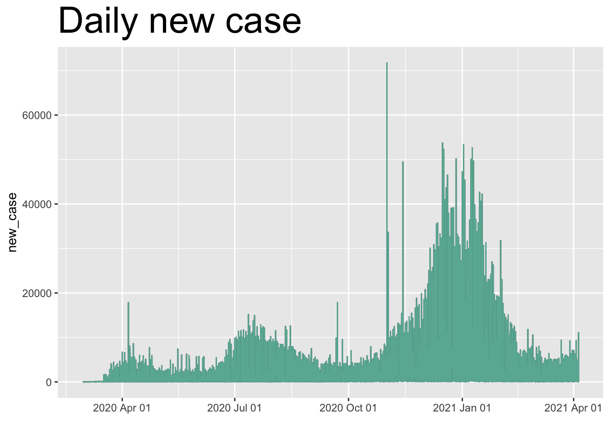

Chapter 9 II. Data sources
# data is collected from https://covid.cdc.gov/covid-data-tracker/#vaccinations
# download three csv file for case dath overtime, vaccination rate in the us by states, and demographic data for vaccination
# the problems for the data sets are missing values, not in the desired format, lack of longitude and latitude information for a map plot#import three files
case_dath_clean_overtime <- read.csv(file = './Cases_Deaths_clean.csv')
vaccination_us <- read.csv(file = './Vaccination_us_clean.csv')
vaccination_age <- read.csv(file = './vaccination_by_age.csv')
vaccination_race <- read.csv(file = './Vaccination_Ethnicity.csv')- Missing values and data transformation
# data cleaning and missing values
# in the vaccination_us table we are only interested in the colums -(State/Territory/Federal Entity, Total Doses Delivered, People with at least One Dose by State of Residence, Percent of Total Pop with at least One Dose by State of Residence, People Fully Vaccinated by State of Residence, Percent of Total Pop Fully Vaccinated by State of Residence, Percent of Total Pop with 1+ Doses by State of Residence, Percent of Total Pop with 2 Doses by State of Residence), hence we need to subset our data
library(naniar)
library(dplyr)
vaccination_us_d = select(vaccination_us, 1,2,9,10,13,14,34,37)
gg_miss_case(vaccination_us_d, facet = vaccination_us_d$State.Territory.Federal.Entity)
# after ploting the missing values graph we discovered that there are three states contains missing values
# they are Bureau of Prisons, Dept of Defense and Veterans Health. theses three values are not any states so we
# decided to remove these three records
vaccination_us_f <- vaccination_us_d[!vaccination_us_d$State.Territory.Federal.Entity == "Bureau of Prisons" & !vaccination_us_d$State.Territory.Federal.Entity == "Dept of Defense" &
!vaccination_us_d$State.Territory.Federal.Entity == "Veterans Health", ]
# the second table is total cases and death by states since Jan 22nd 2020
# in the case_dath_clean_overtime table we are only interested in the colums -(submission_date, state, tot_cases, new_case, tot_death, new_death), hence we need to subset my data) hence we need to subset our data
case_dath_clean_overtime_d = select(case_dath_clean_overtime, 1,2,3,6,8,11)
# plot it again by states to see if there is any missing value
##gg_miss_case(case_dath_clean_overtime_d, facet = case_dath_clean_overtime_d$state)
# there is no missing values in this table (0 in the means there is no new case or new death for the date)
# submission date is in string format. we changed it to date type
case_dath_clean_overtime_d$submission_date <-as.Date(case_dath_clean_overtime_d$submission_date, format = "%m/%d/%Y")
# in order to see total death and cases by state we need to aggregate values by staes
library(plyr)
tot_dc <-ddply(case_dath_clean_overtime_d, "state", summarize, tot_case = max(tot_cases), tot_death = max(tot_death) )
# down longitude and latidue values for each state then merge it to our data
tot_dc_ll<- read.csv(file = 'dc_L_L.csv')